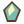

The voyage of an idea
Eight stops from "what if..." to "it's in the game". Click a stop, or use the buttons or your arrow keys.
Two ways to say it
Developers use special words for everyday things. On this page you get the plain way first, then the developer word right next to it. Soon you'll use both.
Match the word
Pick the developer word that means the plain one. Five right in a row makes it rain gold.
Meet the crew (how it's built)
Every box is a real part of the system. Click one to see what it does and where it lives. Lines light up to show who talks to whom.
The /arr2d2 commands
Type these as a comment. arr2d2 is the ship's robot: it only listens to the crew, and only when the command is the very first line of your comment.
/ARR2D2 Approve works the same as /arr2d2 approve.Practice deck
A pretend comment box that follows the real rules. Pick who you are, what state the idea is in, and try a command. Nothing here touches the real project.
Your comments and arr2d2's replies show up here.
This is a simulation of the real rules, so the exact words arr2d2 uses on GitHub can differ a little.
Rules of the sea, and the status board
Labels are colored status tags on an idea card issue. They tell you at a glance who the ball is with.
arr2d2 asked questions. The person who filed the idea answers in a comment, and arr2d2 reads it again by itself.
The idea is clear. A crewmate (not the one who filed it) can type
/arr2d2 approve.The coding helper is busy on it. This can take a while, up to half an hour.
arr2d2 wasn't sure, or the idea wandered off topic twice. A mentor takes a look.
The columns on the PirateHub board. They help you track ideas.
Why the robot has fences
Docs and links

Public game repoThe built game that this website serves. The source code lives in a private repo for the crew. Godot docsThe game engine we use (version 4.7.2). Great for learning GDScript.Quick answers
What makes a good idea?
Tell arr2d2 what you want, where it happens, and how it should feel. Keep it to one thing.
Great: "When you beat the lava dragon, a chest with 50 gold coins should pop out next to the shrine."
Tricky: "Make the game better."
If arr2d2 asks questions, that's good news: it wants to build the right thing. Answer in a comment.
Nothing happened after I posted. What now?
Give it a couple of minutes. The robot works on one thing at a time, so it may be busy. Still nothing? Ask a crewmate to type /arr2d2 recheck on the idea, or ask your mentor.
The robot's change isn't quite right. Can I fix it?
Yes. On the change request (pull request), comment /arr2d2 and then what you want changed, like /arr2d2 make the coin spin slower. The helper updates the same change request and the automatic checks (tests) run again. You can do this as many times as you like.
Can the helper play the game?
No. It runs on a small server with no screen, so it can run the automatic tests but it cannot see or feel the game. That is why a human has to playtest. The change request lists what to check.
I merged (added it to the game), but it looks the same.
Wait a few minutes for the new build to publish, then do a hard refresh: Ctrl+Shift+R on Windows and Linux, or Cmd+Shift+R on a Mac.
Game controls
| Key | What it does |
|---|---|
| WASD / arrows | Walk |
| Mouse + click | Aim and attack |
| Shift | Dodge |
| Space | Class ability / relic art |
| E | Interact / talk |
| Hold C | Sprint |
| F / G | Jump / grapple |
| Q / R | Use / switch potion |
| I / M | Inventory / map |
| Esc | Pause |
Run the game on your own computer
Install Godot 4.7.2, get a copy of the project (ask your mentor for access to the private repo), open project.godot and press F5. The file AGENTS.md in the project explains the code map and how to run the tests.